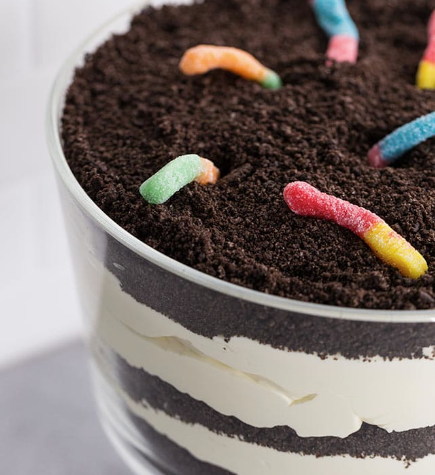

Dirt Desert

Creepy, crawly candies make this dessert fun to eat! Perfect for spooky Halloween fun.
Ingredients:
- 2 cups cold milk
- 1 (4-ounce) package chocolate instant pudding
- 1 (8-ounce) container whipped topping, thawed
- 1 (16-ounce) package Oreos, crushed to crumbs
- Gummy Worms
- 10 (8-ounce) plastic cups
Steps:
- Pour the milk into a mixing bowl and add the pudding mix. Beat with a wire whisk until well blended (about 2 minutes) and let pudding stand for five minutes.
- Fold whipped topping into the pudding very gently until it is all the same color.
- Place about 1 tablespoon of the crushed cookies into the bottom of each cup, then add about 2 tablespoons of pudding to each cup.
- Repeat another layer of cookies, then pudding, ending with another layer of cookies.
- Finish by adding 2 gummy worms to the top of each of the cups.
- Put cups into the refrigerator for about one hour to chill.
Recipe sourced from: mypricechopper.com